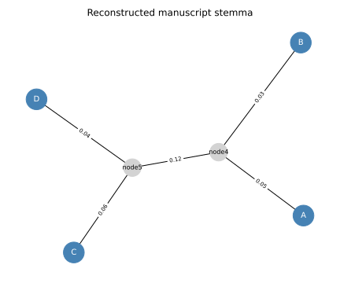

Manuscript Stemma Reconstruction
The Problem
- A historical text often survives in multiple manuscript copies, each introduced by scribes who occasionally made errors, omitted passages, or substituted words.
- A stemma is the family tree of those copies: it shows which manuscripts descend from which others and reconstructs lost intermediate ancestors.
- Stemma reconstruction is the computational problem of recovering that tree from the patterns of shared variants across surviving manuscripts.
- The approach here:
- Model each manuscript as a sequence of binary variant loci.
- Measure pairwise dissimilarity using Hamming distance.
- Apply the UPGMA algorithm to recover the tree topology and branch lengths.
- Visualize the reconstructed stemma.
Two manuscripts share 12 unique errors that appear in no other copy. A third manuscript shares none of those errors. What does this pattern most strongly suggest?
- The two manuscripts are later than the third.
- Wrong: later position in time does not follow from shared errors; a manuscript copied early can still share errors with a sibling copied later.
- The two manuscripts descend from a common intermediate ancestor that already
- contained those errors before they were each copied.
- Correct: shared unique errors (not present in the archetype or other branches) are the primary evidence for a common intermediate ancestor in stemmatic analysis.
- The scribe of one manuscript copied the other directly.
- Partly correct as one possibility, but an intermediate ancestor explains the same pattern without requiring direct copying; more evidence is needed to distinguish the two cases.
- The errors are scribal conventions and do not indicate copying relationships.
- Wrong: shared unique errors in the same positions are statistically very unlikely to have arisen independently and are the standard evidence for a copying relationship.
Variant Loci and Hamming Distance
- A variant locus is a specific position in a manuscript where at least one copy reads differently from the others.
- We represent each manuscript as a binary sequence: 0 if the reading at a locus matches the archetype, 1 if it has been corrupted.
- The Hamming distance between two manuscripts is the fraction of loci where they disagree:
$$D(A, B) = \frac{\text{number of loci where } A \neq B}{\text{total loci}}$$
- Manuscripts that share a common intermediate ancestor will have a smaller Hamming distance to each other than to manuscripts from a different family, because they share inherited variants in addition to their unique ones.
Distance Matrix for the Reference Stemma
- The reference stemma is:
$$((A:0.05,\ B:0.03):0.07,\ (C:0.06,\ D:0.04):0.05)$$
- Manuscripts A and B share intermediate ancestor alpha, which is separated from the archetype by 0.07. C and D share beta, separated from the archetype by 0.05.
- Pairwise distances are sums of branch lengths along the path between each pair.
| Pair | Distance |
|---|---|
| A, B | 0.05 + 0.03 = 0.08 |
| A, C | 0.05 + 0.07 + 0.05 + 0.06 = 0.23 |
| A, D | 0.05 + 0.07 + 0.05 + 0.04 = 0.21 |
| B, C | 0.03 + 0.07 + 0.05 + 0.06 = 0.21 |
| B, D | 0.03 + 0.07 + 0.05 + 0.04 = 0.19 |
| C, D | 0.06 + 0.04 = 0.10 |
def make_distance_matrix(noise_scale=0.0, seed=42):
"""Return (names, D) using exact tree-additive distances.
When noise_scale=0.0 (default) the distances are exact and NJ recovers
the true topology and branch lengths to machine precision.
A non-zero noise_scale adds symmetric Gaussian noise to simulate the
imperfect additivity of real manuscript data.
"""
n = len(MANUSCRIPTS)
D = np.zeros((n, n))
for i, a in enumerate(MANUSCRIPTS):
for j, b in enumerate(MANUSCRIPTS):
if i < j:
key = (a, b) if (a, b) in _BRANCH else (b, a)
D[i, j] = D[j, i] = _BRANCH[key]
if noise_scale > 0.0:
rng = np.random.default_rng(seed)
noise = rng.normal(0, noise_scale, (n, n))
noise = (noise + noise.T) / 2
np.fill_diagonal(noise, 0)
D = np.maximum(D + noise, 0.0)
return list(MANUSCRIPTS), D
The UPGMA Algorithm
- UPGMA (Unweighted Pair-Group Method with Arithmetic means) builds a rooted tree by iteratively merging the pair of nodes with the smallest pairwise distance.
- At each step:
- Find the pair $(i, j)$ with the smallest $D(i,j)$.
- Create an internal node $u$. Each branch from $u$ has length $D(i,j)/2$:
$$\ell_i = \ell_j = \frac{D(i,j)}{2}$$
- Replace $i$ and $j$ with $u$. Distance from $u$ to any remaining taxon $k$ is the average:
$$D(u,k) = \frac{D(i,k) + D(j,k)}{2}$$
- Repeat until two nodes remain, then join them with an edge equal to the remaining distance.
- UPGMA assumes a constant rate of scribal error across all manuscripts (analogous to the molecular clock in phylogenetics). The neighbor-joining algorithm relaxes this assumption but requires more advanced mathematics.
def upgma(names, dist_matrix):
"""Run the UPGMA algorithm and return a list of (node_a, node_b, length) edges.
`names` is a list of manuscript labels.
`dist_matrix` is a symmetric distance matrix with zero diagonal.
UPGMA (Unweighted Pair-Group Method with Arithmetic means) builds a rooted,
ultrametric tree. At each step it merges the pair with the smallest pairwise
distance, assigns each branch half that distance, then recomputes distances to
the new node as the average of the merged nodes' distances.
Returns a list of (node_a, node_b, branch_length) triples. For each internal
node u created by merging i and j, two edges are added: (u, i, D(i,j)/2) and
(u, j, D(i,j)/2). The final two nodes are joined by one last edge.
"""
names = list(names)
D = dist_matrix.copy().astype(float)
edges = []
# node_counter starts after all leaf indices so generated names never
# collide with manuscript labels such as "A", "B", etc.
node_counter = len(names)
while len(names) > 2:
n = len(names)
# Find the pair (i, j) with i < j that has the smallest distance.
np.fill_diagonal(D, np.inf)
idx = np.argmin(D)
np.fill_diagonal(D, 0.0)
i, j = divmod(int(idx), n)
if i > j:
i, j = j, i
d_ij = D[i, j]
# Each branch from the new node u to i and j has length D(i,j)/2.
half = d_ij / 2.0
u_name = f"node{node_counter}"
node_counter += 1
edges.append((u_name, names[i], half))
edges.append((u_name, names[j], half))
# Distance from u to every remaining taxon k is the average of the
# distances from i and from j to k (UPGMA averaging rule).
new_row = np.array(
[0.5 * (D[i, k] + D[j, k]) for k in range(n)]
)
# Remove rows/columns for i and j; append row/column for u.
keep = [k for k in range(n) if k != i and k != j]
D_new = D[np.ix_(keep, keep)]
extra = new_row[keep]
size = len(keep) + 1
D2 = np.zeros((size, size))
D2[: len(keep), : len(keep)] = D_new
D2[: len(keep), -1] = extra
D2[-1, : len(keep)] = extra
D = D2
names = [names[k] for k in keep] + [u_name]
# Two nodes remain; connect them with the remaining distance.
edges.append((names[0], names[1], D[0, 1]))
return edges
A Worked Example
Starting with $n = 4$ manuscripts and the distances from the reference stemma:
| A | B | C | D | |
|---|---|---|---|---|
| A | — | 0.08 | 0.23 | 0.21 |
| B | — | 0.21 | 0.19 | |
| C | — | 0.10 | ||
| D | — |
Step 1: the minimum distance is $D(A,B) = 0.08$. Merge A and B into node4. Branch lengths: $\ell_A = \ell_B = 0.08/2 = 0.04$. Update the matrix using the UPGMA averaging rule:
$$D(\text{node4}, C) = \frac{0.23 + 0.21}{2} = 0.22$$ $$D(\text{node4}, D) = \frac{0.21 + 0.19}{2} = 0.20$$
The $3 \times 3$ matrix after step 1:
| node4 | C | D | |
|---|---|---|---|
| node4 | — | 0.22 | 0.20 |
| C | — | 0.10 | |
| D | — |
Step 2: the minimum distance is $D(C,D) = 0.10$. Merge C and D into node5. Branch lengths: $\ell_C = \ell_D = 0.10/2 = 0.05$. Update:
$$D(\text{node4}, \text{node5}) = \frac{0.22 + 0.20}{2} = 0.21$$
Step 3: two nodes remain (node4 and node5). Join them with the remaining edge of length $0.21$.
The recovered edges are:
| Edge | Length |
|---|---|
| node4 -- A | 0.04 |
| node4 -- B | 0.04 |
| node5 -- C | 0.05 |
| node5 -- D | 0.05 |
| node4 -- node5 | 0.21 |
In step 2 of the worked example, which pair is merged?
- node4 and C, because D(node4, C) = 0.22 is the second-smallest entry.
- Wrong: D(C, D) = 0.10 is smaller than D(node4, C) = 0.22 and D(node4, D) = 0.20, so C and D are merged first.
- C and D, because D(C, D) = 0.10 is the smallest remaining distance.
- Correct: UPGMA always merges the pair with the global minimum distance in the current matrix.
- node4 and D, because D(node4, D) = 0.20 is smaller than D(node4, C) = 0.22.
- Wrong: D(C, D) = 0.10 is the global minimum and is smaller than both cross-family distances, so C and D are merged.
Hamming Distance Function
def hamming_distance(seq_a, seq_b):
"""Return the fraction of loci where seq_a and seq_b differ.
Both sequences must be 1-D integer arrays of the same length.
A value of 0.0 means identical manuscripts; 1.0 means they differ at
every locus. This is the Hamming distance normalized by sequence length.
"""
return float(np.sum(seq_a != seq_b)) / len(seq_a)
Visualizing the Stemma
def draw_stemma(edges, manuscripts, filename):
"""Save an unrooted stemma tree diagram to `filename`.
Manuscript nodes (leaves) are drawn in steelblue; reconstructed
intermediate ancestor nodes are drawn in lightgrey.
Edge labels show the branch length (fraction of differing loci)
rounded to two decimal places.
"""
G = nx.Graph()
for a, b, length in edges:
G.add_edge(a, b, weight=round(length, 4))
pos = nx.spring_layout(G, seed=3)
leaf_nodes = [n for n in G.nodes() if n in manuscripts]
internal_nodes = [n for n in G.nodes() if n not in manuscripts]
fig, ax = plt.subplots(figsize=(6, 5))
nx.draw_networkx_nodes(
G, pos, nodelist=leaf_nodes, node_color="steelblue", node_size=700, ax=ax
)
nx.draw_networkx_nodes(
G, pos, nodelist=internal_nodes, node_color="lightgrey", node_size=500, ax=ax
)
nx.draw_networkx_labels(
G,
pos,
ax=ax,
font_size=10,
font_color="white",
labels={n: n for n in leaf_nodes},
)
nx.draw_networkx_labels(
G, pos, ax=ax, font_size=8, labels={n: n for n in internal_nodes}
)
nx.draw_networkx_edges(G, pos, ax=ax)
edge_labels = {(a, b): f"{d:.2f}" for a, b, d in edges}
nx.draw_networkx_edge_labels(G, pos, edge_labels=edge_labels, font_size=7, ax=ax)
ax.set_title("Reconstructed manuscript stemma")
ax.axis("off")
plt.tight_layout()
plt.savefig(filename)
plt.close(fig)

Generating Synthetic Manuscripts
- The stochastic generator simulates a known copying tree by propagating random mutations from the archetype through each branch.
- Each locus flips independently with probability
MUTATION_PROB = 0.05. - Only the four surviving manuscripts A, B, C, D are returned; the archetype and intermediate ancestors are not observed.
def make_manuscripts(
n_loci=N_LOCI,
mutation_prob=MUTATION_PROB,
seed=SEED,
):
"""Return a dict mapping each manuscript name to its variant sequence.
The copying tree is:
archetype
|-- alpha (intermediate ancestor of A and B)
| |-- A
| `-- B
`-- beta (intermediate ancestor of C and D)
|-- C
`-- D
Each branch introduces random mutations independently. The archetype
starts as all-zero; mutations flip a locus from 0 to 1 (or back).
Only the four surviving manuscripts are returned; the archetype and
intermediate ancestors are not observed.
"""
rng = np.random.default_rng(seed)
archetype = np.zeros(n_loci, dtype=np.int8)
alpha = _copy(archetype, mutation_prob, rng)
beta = _copy(archetype, mutation_prob, rng)
mss = {
"A": _copy(alpha, mutation_prob, rng),
"B": _copy(alpha, mutation_prob, rng),
"C": _copy(beta, mutation_prob, rng),
"D": _copy(beta, mutation_prob, rng),
}
return mss
Testing
-
Hamming distance edge cases
- Identical sequences have distance 0.0.
- Sequences that differ at every locus have distance 1.0.
- Sequences that differ at exactly half the loci have distance 0.5.
-
Distance matrix structure
- The matrix must be symmetric with a zero diagonal.
- Within-family distances (A–B and C–D) must be smaller than any cross-family distance, reflecting the true two-clade topology.
-
Topology recovery
- A and B must share a private internal ancestor (node4), and C and D must share a different one (node5), with no manuscript connected to both internal nodes.
- UPGMA merges A and B first (D=0.08, the global minimum), then C and D (D=0.10, the next minimum), then joins the two internal nodes.
-
Branch-length recovery
- With the reference distances, UPGMA assigns branch length 0.04 to each of the A and B edges (half of 0.08), 0.05 to each of the C and D edges (half of 0.10), and 0.21 to the internal edge.
- Tolerance $10^{-10}$ covers only accumulated floating-point rounding.
-
All lengths positive
- Every branch length returned by UPGMA must be strictly positive, confirming that no degenerate zero-length branches were produced.
-
Stochastic generator topology
- Manuscripts generated by the copying simulator must also satisfy the within-family vs. cross-family distance inequality, confirming that the mutation rate is low enough for the tree signal to dominate noise.
import pytest
import numpy as np
from generate_stemma import make_manuscripts, MANUSCRIPTS
from stemma import (
hamming_distance,
make_distance_matrix,
upgma,
)
# ---------------------------------------------------------------------------
# hamming_distance
# ---------------------------------------------------------------------------
def test_hamming_identical():
# Two identical sequences have distance 0.0.
seq = np.array([0, 1, 0, 1, 1], dtype=np.int8)
assert hamming_distance(seq, seq.copy()) == pytest.approx(0.0)
def test_hamming_all_different():
# Sequences that differ at every locus have distance 1.0.
seq_a = np.zeros(10, dtype=np.int8)
seq_b = np.ones(10, dtype=np.int8)
assert hamming_distance(seq_a, seq_b) == pytest.approx(1.0)
def test_hamming_half():
# Sequences differing at exactly half the loci have distance 0.5.
seq_a = np.zeros(8, dtype=np.int8)
seq_b = np.array([1, 1, 1, 1, 0, 0, 0, 0], dtype=np.int8)
assert hamming_distance(seq_a, seq_b) == pytest.approx(0.5)
# ---------------------------------------------------------------------------
# Distance matrix
# ---------------------------------------------------------------------------
def test_distance_matrix_symmetry():
# The distance matrix must be symmetric with zero diagonal.
names, D = make_distance_matrix()
n = len(names)
assert D.shape == (n, n)
np.testing.assert_allclose(D, D.T, atol=1e-12)
np.testing.assert_allclose(np.diag(D), 0.0, atol=1e-12)
def test_distance_matrix_within_family_smaller():
# Within-family distances (A–B and C–D) must be smaller than cross-family
# distances (A–C, A–D, B–C, B–D), reflecting the true copying tree.
names, D = make_distance_matrix()
idx = {n: i for i, n in enumerate(names)}
d_ab = D[idx["A"], idx["B"]]
d_cd = D[idx["C"], idx["D"]]
cross = [D[idx[a], idx[b]] for a in "AB" for b in "CD"]
assert d_ab < min(cross)
assert d_cd < min(cross)
# ---------------------------------------------------------------------------
# UPGMA topology and branch lengths
# ---------------------------------------------------------------------------
def test_upgma_topology_recovery():
# A and B must share a private internal ancestor, and C and D must share
# a different one. UPGMA merges the pair with the smallest distance first:
# D(A,B) = 0.08 is the global minimum, so A and B are joined first into
# node4; then D(C,D) = 0.10 < D(node4,C) = D(node4,D), so C and D are
# joined into node5; finally node4 and node5 are joined.
names, D = make_distance_matrix()
edges = upgma(names, D)
# Build an adjacency map.
adj = {}
for a, b, _ in edges:
adj.setdefault(a, []).append(b)
adj.setdefault(b, []).append(a)
# Find the internal node connected to each manuscript.
parent_a = [n for n in adj["A"] if n not in MANUSCRIPTS][0]
parent_b = [n for n in adj["B"] if n not in MANUSCRIPTS][0]
parent_c = [n for n in adj["C"] if n not in MANUSCRIPTS][0]
parent_d = [n for n in adj["D"] if n not in MANUSCRIPTS][0]
assert parent_a == parent_b, "A and B should share an internal ancestor"
assert parent_c == parent_d, "C and D should share an internal ancestor"
assert parent_a != parent_c, (
"AB family and CD family should have different ancestors"
)
def test_upgma_branch_lengths():
# UPGMA branch lengths for the reference distance matrix.
#
# Step 1: merge A and B (D=0.08). Each branch length = 0.08/2 = 0.04.
# D(node4, C) = (0.23 + 0.21) / 2 = 0.22
# D(node4, D) = (0.21 + 0.19) / 2 = 0.20
#
# Step 2: merge C and D (D=0.10 < 0.20 < 0.22). Each branch length = 0.05.
# D(node4, node5) = (0.22 + 0.20) / 2 = 0.21
#
# Step 3: join node4 and node5 with the remaining distance = 0.21.
#
# Tolerance 1e-10 covers only accumulated floating-point rounding.
names, D = make_distance_matrix()
edges = upgma(names, D)
expected = {
frozenset(["node4", "A"]): 0.04,
frozenset(["node4", "B"]): 0.04,
frozenset(["node5", "C"]): 0.05,
frozenset(["node5", "D"]): 0.05,
frozenset(["node4", "node5"]): 0.21,
}
recovered = {frozenset([a, b]): length for a, b, length in edges}
for key, true_len in expected.items():
assert key in recovered, f"Missing edge {key}"
assert recovered[key] == pytest.approx(true_len, abs=1e-10)
def test_upgma_all_lengths_positive():
# Every branch length in the UPGMA tree must be strictly positive.
names, D = make_distance_matrix()
edges = upgma(names, D)
for a, b, length in edges:
assert length > 0, f"Non-positive branch length on edge {a}--{b}: {length}"
# ---------------------------------------------------------------------------
# Stochastic generator topology
# ---------------------------------------------------------------------------
def test_generator_topology():
# Manuscripts generated stochastically must also produce a distance matrix
# whose minimum within-family distance is smaller than the minimum
# cross-family distance, so UPGMA can still find the correct grouping.
mss = make_manuscripts()
within = [
hamming_distance(mss["A"], mss["B"]),
hamming_distance(mss["C"], mss["D"]),
]
cross = [hamming_distance(mss[a], mss[b]) for a in "AB" for b in "CD"]
assert max(within) < min(cross), (
"Within-family distances should be smaller than cross-family distances"
)
Manuscript stemma key terms
- Stemma
- The family tree of manuscript copies of a text, showing which copies derive from which others; internal nodes represent lost intermediate ancestors and leaves represent surviving manuscripts
- Stemma reconstruction
- The computational task of recovering the stemma from patterns of shared variants (errors or readings) across surviving manuscripts; analogous to phylogenetic tree reconstruction in biology
- Archetype
- The hypothetical original manuscript from which all surviving copies ultimately derive; it may itself be lost, in which case it is inferred as the root of the stemma
- Variant locus
- A position in a text where at least two manuscripts have different readings; used as the character data for computing pairwise distances
- Hamming distance
- The fraction of corresponding positions at which two sequences differ; for binary variant sequences, it equals the proportion of loci where one manuscript has the archetype reading and the other has a variant
- UPGMA
- Unweighted Pair-Group Method with Arithmetic means; a clustering algorithm that builds a rooted, ultrametric tree by iteratively merging the pair of nodes with the smallest pairwise distance and updating distances by averaging; assumes a constant rate of change along all branches
Exercises
Do the math
-
Two manuscripts each have 100 variant loci. Manuscript A differs from the archetype at loci 1–10 and 21–30. Manuscript B differs from the archetype at loci 1–10 and 41–55. What is the Hamming distance between A and B?
-
After merging A and B into node4 in the first UPGMA step, $D(A, C) = 0.23$ and $D(B, C) = 0.21$. Using the UPGMA averaging rule $D(\text{node4}, C) = (D(A,C) + D(B,C)) / 2$, what is $D(\text{node4}, C)$?
Hamming distance from manuscript sequences
The generate_stemma module produces actual sequences, not just distances.
Write build_distance_matrix(mss) that accepts the dict returned by
make_manuscripts and computes the full $4 \times 4$ Hamming distance matrix.
Run UPGMA on this matrix and compare the recovered topology to the one from
make_distance_matrix.
Do the stochastic distances give the same grouping?
Effect of mutation rate
Re-run make_manuscripts with mutation_prob values of 0.01, 0.05, 0.10, and 0.20.
For each rate, compute the distance matrix and check whether UPGMA recovers the correct
two-family topology.
At what mutation rate does the signal begin to fail, and why?
Effect of noise on UPGMA
UPGMA assumes all branch rates are equal (the constant-rate assumption).
Add Gaussian noise to the reference distance matrix using make_distance_matrix(noise_scale=s)
for $s \in {0.01, 0.02, 0.05}$.
At what noise level does UPGMA first recover the wrong topology (A or B grouped with C or D)?
How does this compare to the noiseless case?
Adding a contaminated manuscript
A contaminated manuscript (one that was copied partly from two different sources) does not fit a tree model. Add a fifth manuscript E whose sequence is a 50/50 mix of A and C. Compute the distance matrix for all five manuscripts and run UPGMA. Does the algorithm detect the problem, and if so, how is it visible in the recovered tree?